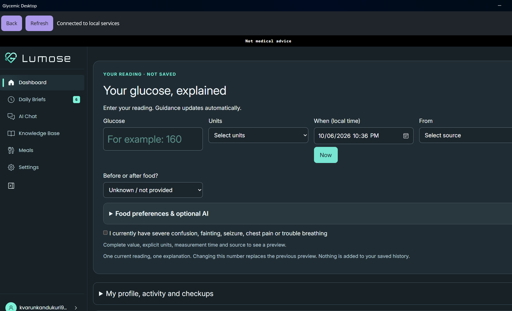
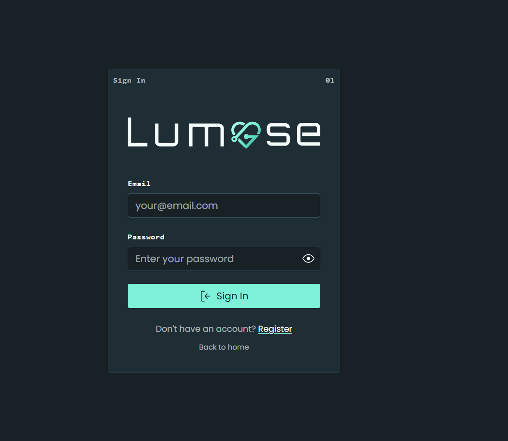

Backend & APIs
C# · .NET Core · ASP.NET Core · MVC · Web API · REST · WCF · Microservices
VARUN KUMAR KANDUKURI Cleveland, OH
C# / ASP.NET Core / Angular / Azure
Building enterprise web applications across banking and healthcare, from APIs and data access to responsive interfaces.
01 / ABOUT
I’m Varun, a .NET developer with experience delivering client/server and web applications across the full software development lifecycle. My work spans banking at MUFG and healthcare applications at Medline and Providence.
I work with C#, ASP.NET Core, Angular, TypeScript, and SQL Server, backed by object-oriented design and layered architecture. My experience also includes Azure deployments, CI/CD, containerization, and AI integrations with Azure OpenAI.
View experience02 / SKILLS
Backend, frontend, data, and delivery.
C# · .NET Core · ASP.NET Core · MVC · Web API · REST · WCF · Microservices
Angular · TypeScript · JavaScript · HTML5 · CSS3 · Angular Material
SQL Server · Entity Framework Core · LINQ · Stored procedures · Query optimization
Azure · App Services · Service Bus · Docker · Jenkins · Azure DevOps · Git · CI/CD
Azure OpenAI · OpenAI API · GitHub Copilot · LLM integration · Prompt engineering · RAG · Azure Cognitive Services
NUnit · MSTest · Postman · Swagger · OOP · Design patterns · Agile · Code reviews
03 / EXPERIENCE
Selected responsibilities from client engagements.
C# / ASP.NET Core / Angular / SQL Server / Azure / Jenkins / Docker
.NET Core / Angular / TypeScript / SQL Server / Azure / Splunk
ASP.NET / C# / SQL Server / WCF / JavaScript / MVC
04 / FEATURED PROJECTS
A glucose-focused app interface with a reading dashboard and account sign-in.
The current screen includes inputs for a glucose value, units, measurement time, source, and before-or-after-food context. It labels the current reading as unsaved and describes an explanation preview.
The navigation shows Daily Briefs, AI Chat, Knowledge Base, Meals, and Settings. The dashboard also includes expandable areas for food preferences and optional AI, plus profile, activity, and checkups.
The sign-in screen shows email and password fields, a password visibility control, and links to registration and home.


Screens from the current development version. The dashboard displays “Not medical advice.”
05 / EDUCATION
MAY 2025
Information Systems
Cleveland State University · Cleveland, OH
MAY 2022
Mechanical Engineering
Vidya Jyothi Institute of Technology (VJIT) · India
06 / RESUME
Experience, technical skills, and education in one document.
07 / GITHUB
Explore my repositories on GitHub.
08 / CONTACT
Connect with me on LinkedIn to discuss .NET development opportunities.